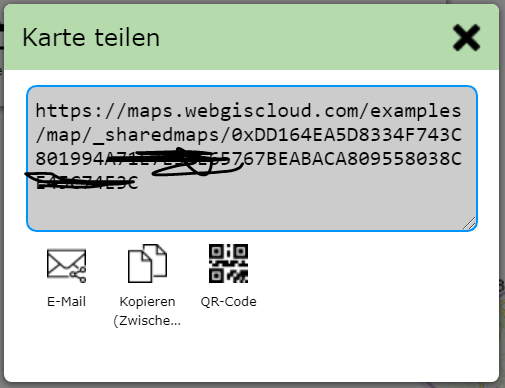

Karte teilen¶
Mit dem Karte speichern und Karte laden Werkzeug können Karten immer nur vom selben Benutzer verwaltet werden. Möchte man eine Karte mit anderen Benutzern teilen, hilft diese Werkzeug.
Geteilt werden:
Kartenausschnitt
Sichtbare Themenebenen
Mit dem Zeichnen (Redlining) Werkzeug erstellte Zeichnungen
Nach dem Öffnen des Werkzeugs erscheint ein Dialog in dem Angeben werden kann, wie lange das Teilen der Karte gültig sein sollte. Das Teilen von Karten sollte nur temporär sind und dem Zweck dienen, Karten dauerhaft zu speichern. Außerdem kann, wie auch schon beim Karte speichern Werkzeug erklärt, nicht garantiert werden, dass die Karte auch noch nach längerer Zeit gleich erscheint.
Wählen sie daher im ersten Dialog aus, wie lange (1 Tage, 1 Woche, 1 Monat) die geteilte Karte gültig sein sollte.
Im nächsten Schritt erscheint ein Dialog mit dem erzeugten Link:
Er erzeugte Link kann über die angeboten Werkezuge
Per E-Mail verschickt (E-Mail Programm öffnet sich)
In die Zwischenablage kopiert
als QR Code angezeigt werden
QR Codes sind praktisch, wenn das Endgerät ein Handy ist. Diese können QR Code in der Regel mit der Kamera scannen und öffnen danach automatisch den hinterlegten Link. Man so beispielsweise einfach ein Karte, die bereits am Desktop geöffnet ist, auf eine mobiles Gerät übertragen.